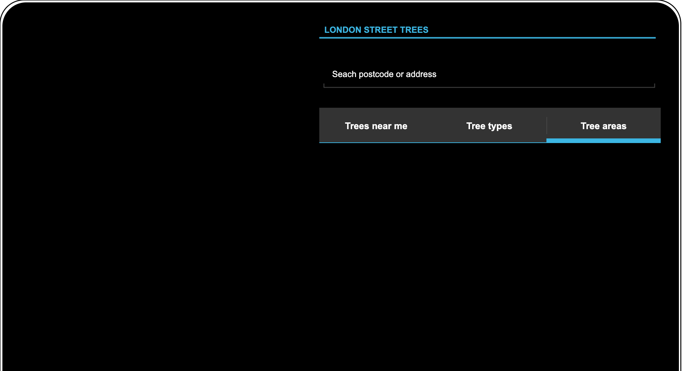

Trees near me
// “trees near me”
// Local resident interested in finding out more about the trees near their house:
// * easily navigate to their postcode/street
// * what species they are
// * other details of interest
Tree types
// “types of tree”
// Tree enthusiast Would like to be able to access underlying data with more information about the trees, as well as being able to _filter_ or _search_ the map to choose their tree of interest.
// * how many of a particular tree species there are in London,
// * where they are distributed
Tree areas

// “compare areas”
// Community group that wants to lobby the local council to plant more street trees in the neighbourhood e.g. to see whether the density of street trees compares favourably (or not) with other nearby locations.
// * visually compare their area with others
// * Would be interested in knowing whether there are any vacant tree pits in the area where new trees could be easily planted.